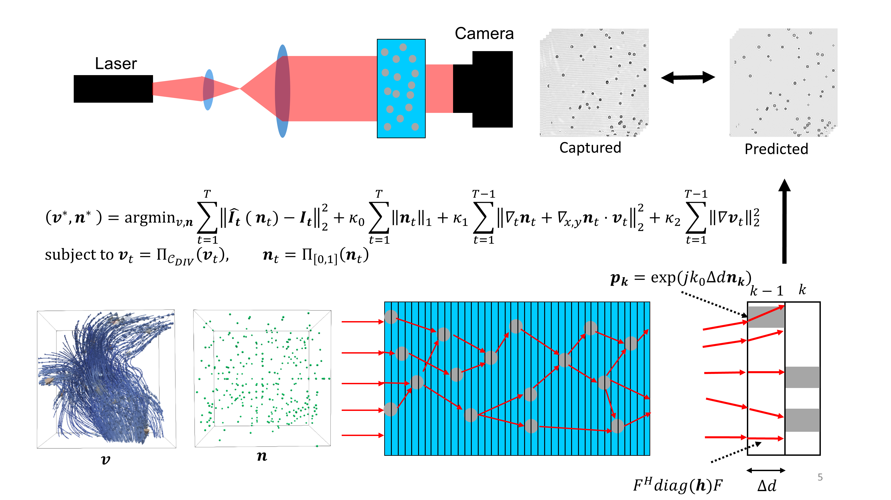

Scattering-aware Holographic PIV with Physics-based Motion Priors.
Miao Qi, Wolfgang Heidrich
ICCP2023.

Scattering-aware Holographic PIV with Physics-based Motion Priors Pipeline. The proposed approach. Top: Setup based on simple and compact in-line holography. A camera captures multiple frames of holograms.Bottom: Plane-to-plane propagation model. The particle volume frame is discretized into thin slices. For every slice, we simulate the plane-to-plane transport and the complex wave modulation, as depicted on the bottom right. The joint optimization problem, including physical motion priors and divergence-free projection, is presented in the center.
Abstract
Particle imaging velocimetry is a classical method in 2D fluid imaging. While 3D extensions exist, they are limited by practical restrictions of multi-camera systems. Holographic particle imaging velocimetry has emerged as a solution for a simple and compact 3D imaging system. However, with dense particle seeding, scattering effects become apparent, and the reconstruction quality suffers, especially in the axial direction. To address these challenges, we propose a simple in-line HPIV approach with a plane-to-plane propagation model to account for the scattering effect. Instead of independently reconstructing particle volume and flow velocity, we present a joint optimization problem for particle and flow reconstruction. This optimization problem combines the a differentiable formulation of the holographic image formation with physical motion priors (incompressible flow and particle motion consistency) to improve the reconstruction quality. We solve this joint optimization problem using an extendable automatic differentiation and alternating optimization framework, and we evaluate the proposed method in synthetic and real experiments. The results demonstrate improved reconstruction quality for both particle density and flow velocity fields. With the plane-to-plane propagation model and physics prior, we push HPIV a step further regarding particle density, tank depth, and reconstruction accuracy.
Paper
Paper [Qi2023HPIVAD.pdf]
Supplementary [Qi2023HPIVADSupp.pdf]